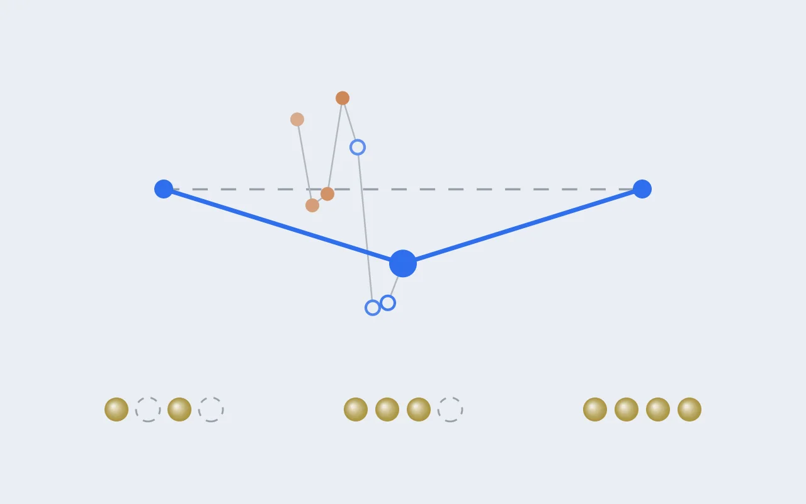

DFT 실습 [12] — Na₀.₇₅MnO₂는 안정한가: 모든 배치를 계산한 최종 판정
α-NaMnO₂는 MnO₂ 층 사이에 Na가 들어 있는 배터리 양극 물질이고, 충전하면 Na가 빠져나가 NaₓMnO₂(x < 1)가 됩니다. 이번에 확인하고 싶었던 건 Na가 4분의 1 빠진 Na₀.₇₅MnO₂가 안정한 상으로 존재하느냐입니다. 실습 [9]에서 저는 불안정하다고 결론을 냈는데, 같은 방법으로 계산한 Li 외(2014)는 안정하다고 보고했습니다. 두 결론이 왜 갈렸는지 찾다가 결국 가능한 배치를 전부 계산하게 됐고, 이 글은 그 기록입니다.

이 글에 나오는 말
- x: NaₓMnO₂에서 Mn 하나당 Na의 수입니다. 충전 전에는 x = 1이고, Na가 절반 빠지면 x = 0.5입니다.
- 배치와 바닥: 같은 조성이라도 Na를 어느 자리에서 빼는지, 어느 Mn이 Mn⁴⁺가 되는지, 스핀이 어느 쪽을 향하는지에 따라 에너지가 달라집니다. 이 경우 하나하나를 배치라고 하고, 계산한 배치 중 에너지가 가장 낮은 것을 바닥이라고 부르겠습니다.
- 볼록 껍질(convex hull): 조성 x에 따른 에너지를 그렸을 때 가장 낮은 점들을 이은 아래쪽 경계선입니다. 이 글에서는 x = 1과 x = 0.5의 바닥을 잇는 직선이 그 선입니다. x = 0.75의 바닥이 이 선보다 아래에 있으면 안정한 상이고, 위에 있으면 그 조성은 생기지 않고 x = 1과 x = 0.5 두 상으로 나뉩니다.
- meV/화학식: NaₓMnO₂ 화학식 하나(Mn 하나)당 에너지입니다. 1 meV는 0.001 eV입니다.
- 강자성(FM)과 반강자성: 모든 Mn의 스핀이 같은 방향이면 강자성, 이웃한 Mn끼리 반대 방향이면 반강자성입니다.
- 1차·2차 이완: 이완은 원자에 걸리는 힘이 거의 0이 될 때까지 원자와 셀을 옮겨 가는 계산입니다. 셀 부피가 바뀌면 바뀐 셀에서 한 번 더 이완(2차)해야 에너지가 정확해집니다.
요약
질문. Na₀.₇₅MnO₂가 안정한 상인지.
방법. 바닥을 찾으려면 Na를 어느 자리에서 뺄지(Na 배열), 어느 Mn이 Mn⁴⁺가 될지(전하 배치), 각 Mn의 스핀이 어느 쪽인지(스핀 배치)를 다 정해야 합니다. 화학식 4개까지의 모든 셀 모양에서 Na 배열과 전하 배치를 계산했고(136건), 조성마다 바닥 배열에서 Mn 8개의 스핀 방향 조합을 전부 계산했습니다(140건).
답. 볼록 껍질보다 9.1 meV/화학식 아래에 있는 안정 상이었습니다. Li 외(2014)와 같은 결론입니다. 실습 [9]에서는 Na 배열을 셀 모양 하나에서만 봤는데, 그때 고른 배열이 바닥보다 약 30 meV/화학식 위에 있었습니다. 그리고 반강자성 배치가 FM보다 낮은 정도가 x = 1에서 38.5, x = 0.5에서 1.7 meV/화학식이라, 스핀 배치를 반영하면 전압이 올라갑니다.
1. 문제: 두 결론의 충돌
이게 왜 중요한지부터 적겠습니다. 전압 곡선의 모양은 충전하는 동안 어떤 중간 조성이 실제로 생기느냐에 따라 달라집니다. 중간 조성이 안정하면 그 조성에서 곡선에 계단이 생깁니다. 불안정하면 그 조성은 생기지 않고, x = 1 상과 x = 0.5 상이 섞인 채로 충전이 진행되면서 전압이 한동안 일정하게 유지됩니다. 이 구간을 평탄 구간이라고 합니다(실습 [9]). 그러니까 Na₀.₇₅MnO₂가 있느냐 없느냐에 따라 α-NaMnO₂의 전압 곡선 모양이 바뀝니다.
| 실습 [9]의 결론 | Li 외 (2014) 보충 자료의 계산 | |
|---|---|---|
| 계산 방법 | PBE+U (U = 3.9 eV), 520 eV | PBE+U (U = 3.9 eV), 520 eV (같음) |
| x = 0.75 탐색 범위 | 셀 모양 하나에서 Na 배열 하나 | 화학식 4개까지의 여러 셀 모양, 수백 개 배열 |
| x = 0.75 판정 | 볼록 껍질 위 +11.1 meV/화학식, 불안정 | 볼록 껍질을 이루는 안정 상 |
설정이 같은데 결론이 반대라면, 먼저 떠오르는 건 실습 [9]에서 제가 x = 0.75의 바닥 배열을 못 찾았을 가능성입니다. 그래서 그걸 확인하는 데서 시작했습니다.
2. 왜 탐색 범위가 결론을 바꾸나
중간 조성이 안정한지는 그 조성에서 가장 낮은 에너지를 양 끝(x = 1, x = 0.5)을 이은 선과 비교해서 정합니다. 바닥 배열을 놓치면 실제로는 선 아래에 있는 조성도 선 위에 있는 것처럼 나옵니다. 문제는 정해야 할 배치가 한 가지가 아니라 세 가지라는 점입니다.
| 탐색 축 | 무엇을 정하나 | 에너지 규모 (이 글의 결과) |
|---|---|---|
| Na 배열과 셀 모양 | Na를 어느 자리에서 뺄지, 그 배열을 어떤 크기·모양의 셀(반복 단위)에 담을지 | 이전 최저와 진짜 바닥이 약 30 meV/화학식 차이 |
| 전하 배치 | Na가 빠진 만큼 어느 Mn이 3+에서 4+가 될지 | 같은 Na 배열 안에서 대부분 같은 상태로 수렴 |
| 스핀 배치 | 각 Mn의 스핀이 위(↑)인지 아래(↓)인지 | FM과 바닥이 최대 38.5 meV/화학식 차이 |
표의 마지막 열을 보면 이유가 보입니다. 판정을 가르는 차이는 화학식당 10 meV 남짓인데, Na 배열을 바꾸면 약 30, 스핀 배치를 바꾸면 최대 38.5 meV/화학식까지 에너지가 달라집니다. 그래서 세 축을 다 훑어보기 전에는 판정을 믿기 어렵습니다. 실습 [9]에서는 스핀 배치의 탐색 범위를 넓힐 때마다 판정이 바뀌었고(세 번), Na 배열은 셀 모양 하나에서만 봤습니다. 이번에 넓힌 게 이 Na 배열 쪽입니다.
3. 방법: 세 축을 빠짐없이
세 단계로 나눠 계산했습니다.
| 단계 | 한 일 | 계산 수 |
|---|---|---|
| A. Na 배열 | 화학식 1~4개짜리 모든 셀 모양(행렬식 4짜리만 35가지)에서 Na를 빼는 경우를 전부 만들고 대칭으로 같은 것을 제거. x = 0.75와 0.5에서 각각 23개의 서로 다른 Na 배열 | · |
| A'. 전하 배치 | 각 Na 배열에서 어느 Mn이 4+가 될지 열거하고 다시 대칭 제거. 전부 FM으로 1차 이완 | 136 (x = 0.75: 54, x = 0.5: 82) |
| B. 정밀화 | 조성마다 가장 낮은 두 배열을 2차 이완(1차 이완의 파동함수 파일 WAVECAR를 읽어 시작) | 4 |
| C. 스핀 | 세 조성의 바닥 배열을 Mn 8개 셀로 늘려, 128가지 스핀 방향에서 대칭과 전체 뒤집기를 뺀 배치를 전부 계산 | 140 (x = 1: 27, x = 0.75: 64, x = 0.5: 49) |
셀 모양은 에르미트 표준형(HNF) 행렬로 열거했습니다. 원래 결정의 반복 단위를 n배로 키우는 방법 하나하나가 HNF 행렬 하나에 대응하고, 그 행렬의 행렬식이 n입니다. 표 3의 "행렬식 4짜리 35가지"는 화학식 4개짜리 셀을 만드는 방법이 35가지라는 뜻입니다. 같은 화학식 4개짜리 셀이라도 어느 방향으로 늘리느냐에 따라 담을 수 있는 Na 배열이 달라서, 크기만 맞추면 안 되고 모양까지 전부 만들어 봐야 배열이 빠짐없이 나옵니다. Li 외(2014)도 같은 방식으로 화학식 4개까지 탐색했습니다.
4. 사고 보고: 절반을 놓친 열거
처음 돌렸을 때는 x = 0.75의 Na 배열이 9개, x = 0.5가 11개 나왔고, 그걸로 낸 판정은 +5.1 meV/화학식(불안정)이었습니다. 그대로 적었으면 문헌과 반대인 결론을 또 한 번 낸 셈입니다.
그런데 결과를 보다가 이상한 걸 발견했습니다. x = 0.75에서 가장 낮게 나온 게 새 배열이 아니라 실습 [8]에서 계산했던 배열이었습니다. 그 배열은 화학식 4개짜리 셀이니 새 목록에 당연히 들어 있어야 하는데, 목록 어디에도 없었습니다. 따라가 보니 셀 모양 행렬의 규칙을 적으면서 행 기준과 열 기준을 뒤바꿔 써 놓았고, 그 바람에 일부 셀 모양은 빠지고 일부는 두 번 세어지고 있었습니다. 고쳐서 다시 세니 Na 배열이 9개에서 23개, 11개에서 23개로 늘었습니다. 다행히 이미 계산한 53건은 올바른 목록에 다 들어 있어서 버릴 건 없었고, 빠진 83건만 더 계산했습니다.
교훈
열거 결과는 개수만 보고 믿으면 안 됩니다. 이미 아는 구조(여기서는 옛 배열)가 목록 안에 있는지 한 번 확인해 본 것만으로, 이번에는 정반대 결론을 낼 뻔한 걸 막았습니다.
5. 결과 ①: 진짜 바닥은 30 meV 아래에 있었다
| 조성 | 이전에 바닥으로 여긴 배열 | 올바른 전체 탐색의 바닥 | 차이 (meV/화학식) |
|---|---|---|---|
| x = 0.75 | 실습 [8]의 15원자 배열 (sc15) | hnf20 | 약 31 |
| x = 0.5 | 실습 [8]의 14원자 배열 (c2) | hnf20 | 약 30 |
제가 손으로 골랐던 배열은 두 조성 모두 바닥보다 약 30 meV/화학식 위에 있었습니다. 판정을 가르는 차이가 10 meV/화학식 남짓이라, 이 정도면 조성마다 바닥이 얼마나 내려가느냐에 따라 판정이 바뀔 수 있습니다. 실제로 두 조성의 바닥이 모두 내려갔고, x = 0.75 쪽이 조금 더 내려가면서 FM 기준 판정이 −14.5 meV/화학식(안정)으로 바뀌었습니다. 2차 이완을 해도 −13.9 meV/화학식으로 거의 그대로였습니다.
6. 결과 ②: Na를 뺄수록 사라지는 반강자성
남은 축은 스핀입니다. 세 조성의 바닥 배열마다 스핀 배치를 전부 계산했습니다.
| 조성 | 바닥 배치 | 2위, 3위 (바닥 대비) | FM (바닥 대비) |
|---|---|---|---|
| x = 1 | udduuddu | +0.8, +1.4 | +38.5 |
| x = 0.75 | udduudud | +2.3, +2.3 | +15.2 |
| x = 0.5 | ududduud | +1.7 (FM), +4.2 | +1.7 |
표를 보면서 눈에 띈 게 두 가지 있었습니다.
하나는 Mn³⁺끼리는 스핀이 반대 방향인 걸 강하게 선호하고, Mn⁴⁺가 늘수록 그 선호가 사라진다는 점입니다. Mn³⁺만 있는 x = 1에서는 반강자성 배치가 FM보다 38.5 meV/화학식 낮은데, Mn⁴⁺가 절반인 x = 0.5에서는 그 차이가 1.7 meV/화학식밖에 안 됩니다. Li 외(2014)의 보충 자료에도 같은 U 값(3.9 eV)에서 Mn³⁺ 줄은 반강자성, Mn⁴⁺ 줄은 강자성으로 결합한다고 나와 있어서, 같은 경향입니다.
다른 하나는 x = 1의 상위 배치 셋이 1.4 meV/화학식 안에 몰려 있다는 점입니다. α-NaMnO₂의 Mn은 b축 방향으로 약 2.9 Å 간격의 사슬을 이루는데, 이 셋은 사슬 안에서 이웃한 스핀이 반대인 건 같고 사슬끼리 어떻게 놓이느냐만 다릅니다. 그러니 사슬 사이의 자기 결합은 아주 약한 셈입니다. α-NaMnO₂는 사슬 방향으로만 자기 결합이 강한 물질(준1차원 자성체)로 알려져 있어서, 이 결과와도 맞습니다.
7. 결과 ③: 최종 판정과 전압 곡선
세 축을 다 탐색한 에너지로 볼록 껍질을 다시 그렸습니다.
결론은 Na₀.₇₅MnO₂가 안정 상(−9.1 meV/화학식)이라는 것입니다. Li 외(2014)의 계산 상평형도와 같은 결론이고, 그 그림에서 읽은 깊이도 10 meV/화학식 남짓이었습니다. 같은 방법으로 같은 범위까지 탐색하니 같은 답이 나왔습니다.
FM 기준(−14.1)과 자기 바닥 기준(−9.1)이 다른 것도 6절 결과로 설명됩니다. 반강자성 배치가 FM보다 낮은 정도가 x = 1에서 가장 크고 x = 0.5에서는 거의 없으니, 스핀 배치를 반영하면 x = 1 끝점이 가장 많이 내려갑니다. 그러면 양 끝을 잇는 선이 x = 1 쪽에서 내려오면서 x = 0.75와 선 사이가 좁아집니다.
| 구간 | FM만 | 최종 (자기 바닥) | 실습 [9]의 결론 |
|---|---|---|---|
| x = 1 → 0.75 | 2.268 V | 2.362 V | 평탄 2.453 V |
| x = 0.75 → 0.5 | 2.381 V | 2.435 V | (같은 평탄 구간) |
| 평균 x = 1 → 0.5 | 2.324 V | 2.398 V | 2.453 V |
전압도 같은 식으로 이해할 수 있습니다. 첫 구간(x = 1 → 0.75)의 전압은 x = 1의 에너지가 낮을수록 높아집니다. 반강자성 배치가 x = 1의 에너지를 가장 많이 낮추니까, Na를 빼는 데 드는 에너지가 커지고 전압이 올라갑니다. 거꾸로 말하면 FM으로만 계산하면 전압이 늘 낮게 나옵니다.
8. 판정이 여러 번 바뀐 이유와 남은 한계
왜 다섯 번이나 뒤집혔나. 판정을 가르는 여유는 화학식당 10 meV 남짓인데, Na 배열에서 30 meV, 스핀에서 최대 38 meV까지 차이가 날 수 있었기 때문입니다. 어느 한 축이라도 덜 탐색한 상태라면 탐색을 넓힐 때마다 판정이 움직일 수밖에 없습니다. 마지막 판정은 두 축을 다 탐색한 결과라서, 앞의 네 번과 달리 탐색을 넓혀도 더 움직이지 않습니다.
실험과의 비교. 첫 구간 2.36 V는 실험의 첫 평탄 구간 2.63 V보다 0.27 V 낮습니다. PBE+U(U = 3.9 eV)의 계통 오차(방법 때문에 늘 같은 방향으로 생기는 오차)로 보고 있습니다. 실습 [9]의 0.18 V보다 차이가 커진 건 x = 0.5에서 더 낮은 배열을 찾아서 끝점이 내려갔기 때문입니다. 계통 오차는 같은 방법으로 계산한 조성끼리 비교하면 대부분 상쇄되니까, 이 연구에서는 절대 전압보다 조성 간 차이를 근거로 씁니다. 그리고 실험의 첫 평탄 구간은 Na₀.₉₃에서 Na₀.₇₀까지인데, Li 외(2014)는 그 끝에 생기는 상이 Na₅/₈MnO₂ 초격자(Na가 규칙적으로 배열해서 반복 단위가 커진 구조)라고 밝혔습니다. 제 계산의 "x = 1과 0.75 사이의 2상 구간"도 같은 방향이긴 한데, x = 5/8을 담으려면 화학식 8개짜리 셀이 필요해서 아직 비교하지 못했습니다.
한계. 셀 크기는 Na 배열 탐색에서 화학식 4개, 스핀 탐색에서 Mn 8개까지만 봤습니다. 층이 쌓이는 방식(적층)은 O3형만 봤고(Li 외는 P3형도 비교했습니다), U도 3.9 eV 하나만 썼습니다. Li 외의 보충 자료를 보면 Mn⁴⁺ 줄의 자기 바닥 상태는 U에 민감해서, x = 0.5 쪽의 자기 에너지는 U를 어떻게 잡느냐에 따라 달라질 수 있습니다.
9. 연구에 주는 의미
제가 최종적으로 계산하려는 건 Mn 자리에 Ni·Fe·Ti 같은 원소를 네다섯 가지 섞은 고엔트로피 층상 산화물입니다. α-NaMnO₂ 하나로 얻은 이번 결과가 그 계산에서 무엇을 해야 하는지 알려 줬습니다.
- 탐색할 축이 곱으로 늘어납니다. 고엔트로피 조성에서는 Na 배열, 전하 배치, 스핀 배치에 전이금속 배열까지 곱해집니다. Mn 한 원소만 있는 계에서도 손으로 고른 배열이 바닥보다 30 meV/화학식 위에 있었으니, 여러 원소가 섞인 계에서 손으로 배열을 고르는 건 불가능합니다. 기계학습 퍼텐셜 CHGNet으로 후보를 먼저 거르는 단계(실습 [11])가 꼭 필요한 이유입니다.
- 자기 배열은 볼록 껍질 판정과 전압을 한쪽으로 움직입니다. 반강자성 배치가 FM보다 낮은 정도가 Mn³⁺ 비율에 따라 달라서, 자기 배열을 무시하면 전압은 낮게 나오고 Mn³⁺가 많은 조성의 안정성도 달라집니다. 그래서 본 계산에서도 최종 후보는 스핀 배치까지 계산합니다.
- 검증이 한 바퀴 끝났습니다. 구조(실습 [5]), 얀-텔러(실습 [8]), 상평형도와 자기 구조(이 글), 전압의 계통 오차(이 글), CHGNet(실습 [11])까지, 계산 절차 전체를 α-NaMnO₂로 문헌·실험과 맞춰 봤습니다. 논문 보충 자료에 방법의 근거로 넣을 내용입니다.
계산 운영 메모
이번 계산을 돌리면서 클러스터에 대해 알게 된 것도 적어 둡니다. 12코어로 보이던 노드가 알고 보니 물리 코어 6개에 하이퍼스레딩(코어 하나를 논리 코어 둘로 보이게 하는 기능)이 켜진 노드였습니다. 한 노드에 병렬(MPI) 계산 두 개를 넣으면 둘이 같은 코어를 나눠 쓰게 돼서, 같은 계산의 이온 스텝 하나가 노드를 혼자 쓸 때는 88초, 나눠 쓸 때는 1,200~1,400초 걸렸습니다. 그 뒤로는 한 노드에 계산 하나를 원칙으로 하고, 노드가 빌 때마다 하나씩 넣는 제출 스크립트를 쓰고 있습니다.
이날 배운 것들
- 중간 상이 안정한지는 "가장 낮은 에너지"의 문제라서, 얼마나 빠짐없이 탐색했느냐가 곧 결론을 얼마나 믿을 수 있느냐입니다.
- 탐색할 축은 Na 배열과 셀 모양, 전하 배치, 스핀 셋이고, 축마다 에너지 차이가 판정의 여유보다 큽니다.
- 손으로 고른 "그럴듯한" 배열은 바닥보다 30 meV 위에 있었습니다.
- 열거 결과는 개수가 아니라 검산으로 믿어야 합니다. 이미 아는 구조가 목록에 있는지 확인해 봅니다.
- 반강자성으로 얻는 이득은 Mn³⁺에서 나옵니다. 그래서 자기 배열을 반영하면 전압이 올라가고 중간 상은 얕아집니다.
다음. α-NaMnO₂로 계산 절차를 검증하는 건 여기까지입니다. 다음부터는 같은 절차를 실제 연구 대상인 고엔트로피 조성(Mn에 Ni, Fe, Ti가 섞인 조성) 여섯 개에 씁니다. 64원자 셀에서 CHGNet으로 배열 수천 개를 거르고, 남은 배열을 DFT로 확정하는 본 계산입니다.

Seok
연구하면서 개발합니다. 배터리 재료를 원자 단위에서 계산하는 법을 바닥부터 배우는 중입니다. → 글 더 보기